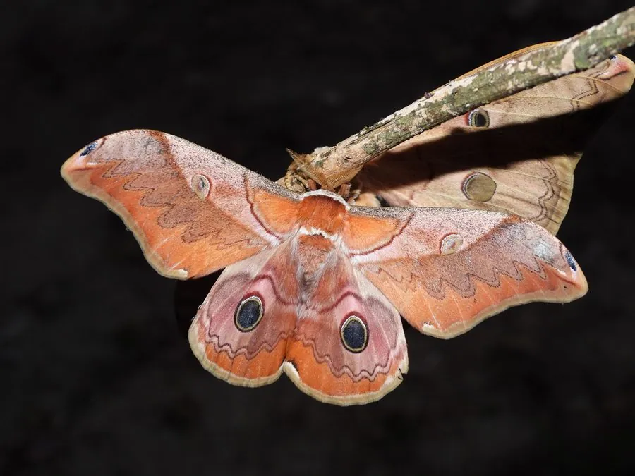

昆虫 · 动物界
银杏大蚕蛾 Dictyoploca japonica

翅面黄褐带黑色蛇头斑的一种大型蚕蛾，幼虫取食银杏和栎类等多种树叶，是亚洲地区常见的观赏蛾类。
- 分类
- 门节肢动物门纲昆虫纲目鳞翅目科天蚕蛾科属银杏大蚕蛾属
- 栖息环境
- 阔叶林、银杏林与果园，银杏和栎类植物附近
- 地理分布
- 中国、日本和朝鲜半岛
- 保护级别
- 暂无评估
物种志
银杏大蚕蛾翅展约 10–13 cm，雌蛾比雄蛾大，翅面黄褐至橙褐色，前翅顶角附近有黑色蛇头状斑纹，翅中央有半透明的月牙斑，翅面还散布着细密的波状纹。雌蛾腹部肥大，雄蛾触角羽状且较宽。
它生活在阔叶林、银杏林和果园附近，成虫在秋季羽化，夜间活动，有趋光性，口器退化不取食，寿命约 1–2 周。幼虫取食银杏、栎类、栗树、柳树等多种植物叶片，身体绿色带瘤突和白色粉状物。银杏大蚕蛾分布于中国、日本和朝鲜半岛，是亚洲常见的蚕蛾，幼虫数量多时会对银杏等树木造成一定危害，成虫则因花纹美丽而常被灯光吸引。它的蛹在土中或落叶层下越冬。
形态与习性
- 食性幼虫取食银杏、栎类、柳树等多种叶片
- 翅展约 10–13 cm
- 识别前翅顶角有黑色蛇头斑，翅面有月牙斑
- 生活史成虫秋季羽化，口器退化不取食
- 分布中国、日本和朝鲜半岛
趣味知识
- 银杏大蚕蛾的幼虫取食银杏叶，因此得名。
- 它的前翅也有蛇头状斑纹，和樗蚕蛾有些相似。
- 成虫在秋季羽化，常被灯光吸引，寿命只有一两周。